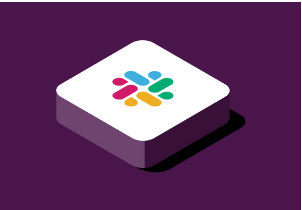

Muévete más rápido organizando tu vida laboral La clave de la productividad en Slack son los espacios organizados, llamados “canales”, uno diferente para cada proyecto en el que estés trabajando. Al tener a todas las personas, mensajes y archivos relacionados con un tema en un mismo lugar, puedes avanzar mucho más rápido. Obtener más información sobre los canales → ¿Qué es un canal? 0:15 Como crear un canal 0:15
Simplifica el trabajo en equipo para todo el mundo Ofrece a todos tus compañeros (de dentro y fuera de tu empresa) una forma más productiva de mantener la sincronización. Responde más rápidamente con emojis, mantén las conversaciones centradas en los canales y simplifica toda tu comunicación en un mismo lugar. Descrubir cómo trabajar con socios externos en Slack → Cómo pausar las notificaciones 0:15
Focaliza tu tiempo marcando tus propias condiciones Date la flexibilidad de trabajar cuando, donde y como mejor te venga. Toma el control de las notificaciones, colabora en directo o en el momento que prefieras y encuentra respuestas en las conversaciones de toda la empresa. Abrir la puerta a horarios más flexibles en Slack Trabaja con socios externos mediante Slack Conect 0:15 Cómo compartir ideas en un canal 0:15
Primeros pasos en Slack 1 Registrate Crea un nuevo espacio de trabajo de Slack en unos instantes.Todos los equipos, sean del tamaño que sean, pueden probarlo de forma gratuita. 2 Invita a tus compañeros de trabajo Slack es mejor en compañía (no, en serio, resulta un poco decepcionante si se utiliza en solitario) y es muy fácil invitar a tu equipo. 3 Pruébalo Dirige un proyecto, coordínate con tu equipo o simplemente habla de ello. Slack es un lienzo en blanco para el trabajo en equipo.  Funciones Echa un vistazo a todo lo que puede hacer la plataforma EXAMINA LAS FUNCIONES →